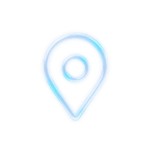

Wheaterflow
Live weer wordt geladen
Wheaterflow is een Belgisch weerplatform voor live weer, regenradar, lokale weersverwachtingen en weerwaarschuwingen.
Live weer, gezien door jou
Persoonlijk weerarchief van jouw opgeslagen locaties. Geen officieel klimatologisch onderzoek.
Instabiliteitsdata (CAPE, lifted index, vrieslaagniveau) per locatie, met filters om kansrijke uren op te sporen.
| Tijd | Weer | CAPE | LI | Stoten | Neerslag% |
|---|
Synchroniseer favorieten, instellingen en meldingen.
Wheaterflow bewaart alleen je e-mailadres, profielnaam, avatar, favoriete plaatsen, instellingen en meldingsvoorkeuren. Locaties worden gebruikt om je weer, favorieten en waarschuwingen te synchroniseren. Je kunt je account en gegevens zelf verwijderen.

Locatie bepalen…Actuele weersinformatie voor jouw locatie.
Open wheaterflow.be/tv op je TV en vul hier de code in.